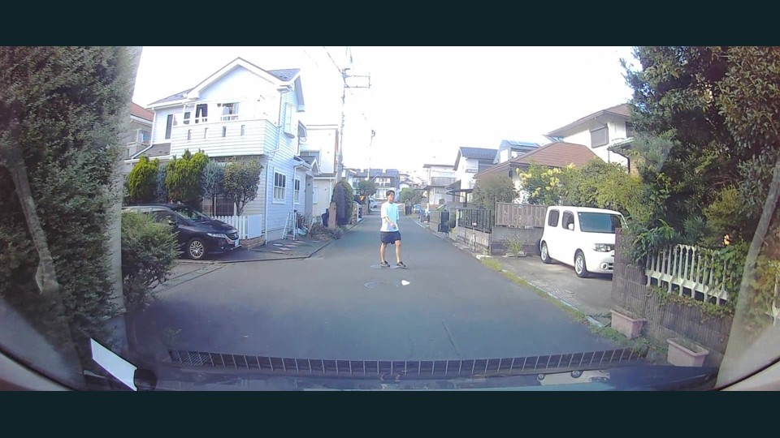
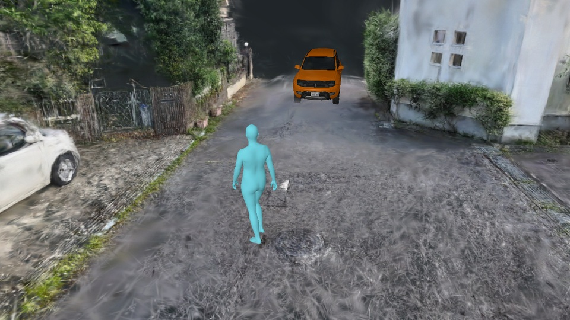
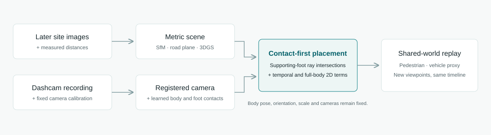

Free-Viewpoint Replay of
Pedestrian–Vehicle Encounters
from Dashcam Video and Revisited-Site Images
1 Keio University2 TOYOTA SYSTEMS CORPORATION3 Keio AI Research Center
Abstract
Monocular dashcam video captures an encounter from a single viewpoint. We combine it with images taken at the site afterward and measured scene geometry to create metric, free-viewpoint replays. Supporting-foot contacts initialize human placement; temporal smoothing and full-body 2D reprojection refine body position. Synchronized roadside and overhead views let viewers inspect estimated pedestrian–vehicle positions and separation over time.
Inputs and replay




Real-world replays
CARLA motion examples
Input videos and top-view pelvis trajectories. These eight examples have the lowest sequence-mean World MPJPE12 among compared methods; results below include all 30 sequences.
Video playback is unavailable. Please try another browser.
Contact-first human placement
Foot contacts initialize placement; directional temporal smoothing and full-body 2D reprojection refine position. Body pose, orientation, scale and cameras stay fixed.

Results
CARLA · 30 sequences · World MPJPE12 in cm (↓). Same 2,635 shared instants; sequence-equal averages.
| Method | World-space joint error |
|---|---|
| Ours | 27.66 |
| TRAM+HAC | 48.51 |
| TRAM | 99.77 |
| GVHMR | 104.16 |
| WHAM | 130.46 |
| GLAMR | 199.30 |
| JOSH | 234.87 |
| Human3R | N/A 2,553 / 2,640 instants; incomplete support |
Our system also uses revisited-site images and measured distances.
Evaluation notes
Inputs and body estimators differ across systems. TRAM+HAC has lower World error in 7/30 sequences; GVHMR has lower acceleration error. Human3R has incomplete support, so its full-set mean is N/A.
These are development results. Validation at unused sites and outside reference coverage remains open; one matched real sequence shifts by up to 4.59 m outside that coverage.
Scope
Offline replay for visible feet on locally planar roads. Estimated geometry requires calibration and independent validation at new sites.